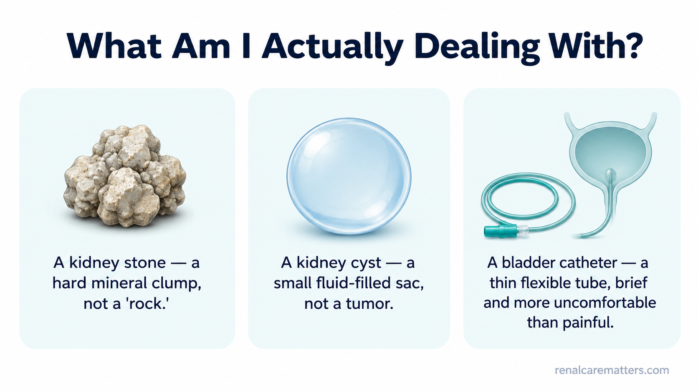
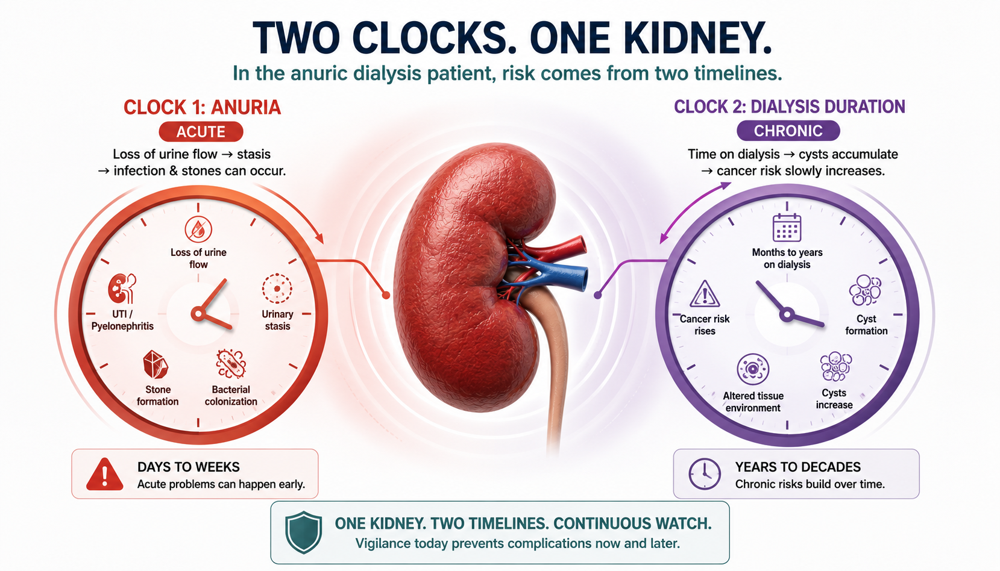
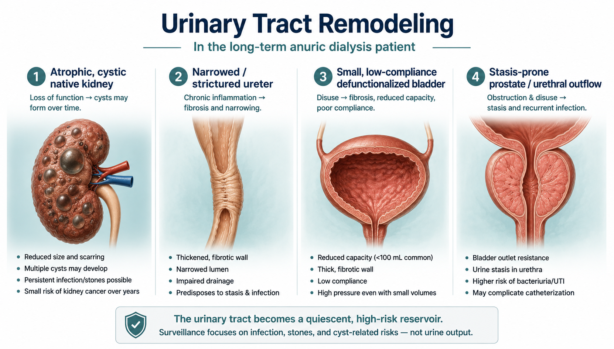
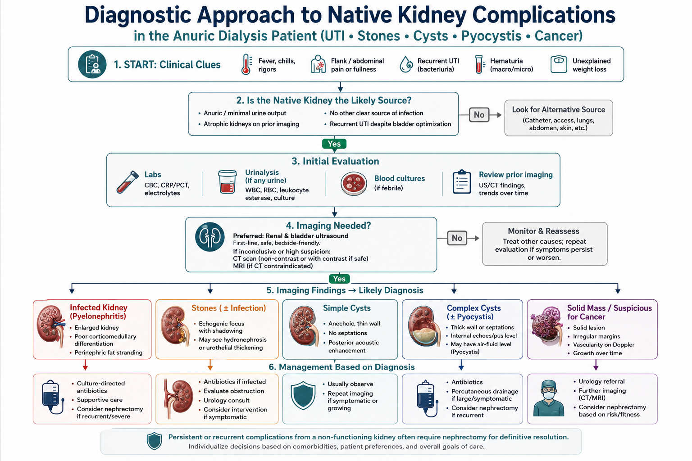
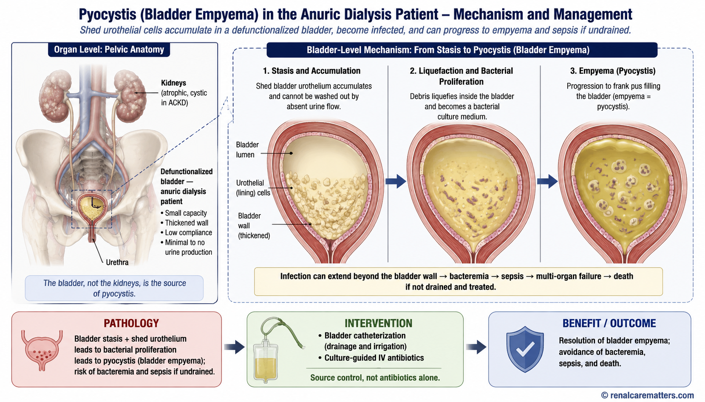
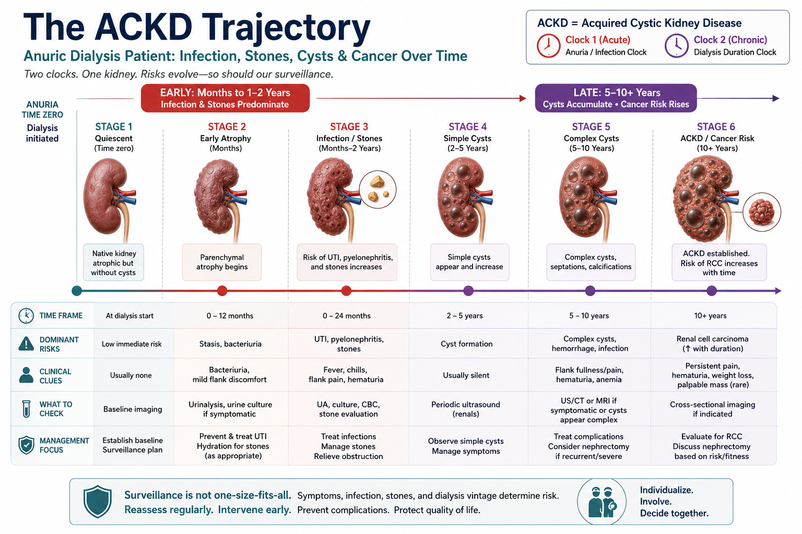
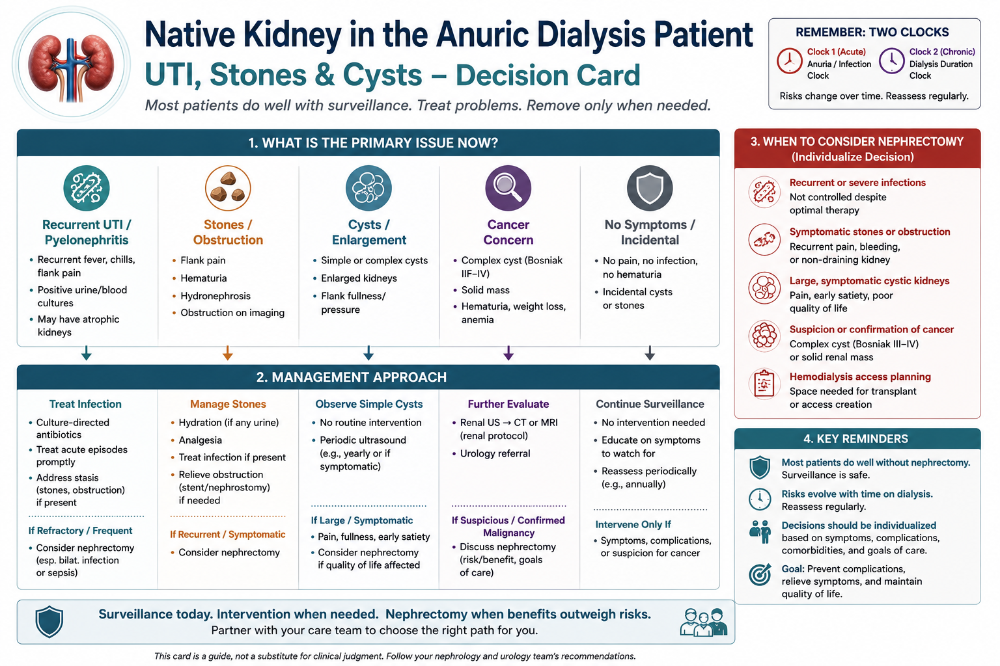

Why your kidneys and bladder change once you stop making urine.Bakit nagbabago ang iyong mga bato at pantog kapag huminto ka nang gumawa ng ihi.Ngano nga nagbag-o ang imong mga kidney ug lawig kung mohunong ka sa pagbuhat og ihi.Baket makapamiyalitan la reng bato mu at pantog nung tuknang ka mianggawa ihi.
If you are on dialysis and pass little or no urine, your own kidneys and bladder don't just sit there unchanged. Over time, your native kidneys slowly shrink and can form small fluid-filled sacs called cysts — this is common and usually not dangerous. A bladder that is no longer regularly filled and emptied also gets smaller and less stretchy over the years. This is expected, and the good news is that if you ever receive a kidney transplant, the bladder usually stretches back out and works again.Kung ikaw ay nasa dialysis at kaunti lang o wala nang ihi, ang iyong sariling mga bato at pantog ay hindi lang basta nananatili nang walang pagbabago. Sa paglipas ng panahon, ang iyong mga likas na bato ay dahan-dahang lumiliit at maaaring makabuo ng maliliit na sakong puno ng likido na tinatawag na cysts — karaniwan ito at kadalasan ay hindi mapanganib. Ang pantog na hindi na regular na napupuno at naiaalis ay lumiliit din at nagiging hindi na kasing-elastiko sa paglipas ng mga taon. Inaasahan ito, at ang magandang balita ay kung sakaling ikaw ay makatanggap ng kidney transplant, ang pantog ay karaniwang bumabalik sa dating anyo at gumagana muli.Kung naa ka sa dialysis ug gamay ra o wala nay ihi, ang imong kaugalingong mga kidney ug lawig dili lang basta magpabilin nga walay kausaban. Sa paglabay sa panahon, ang imong kaugalingong mga kidney hinay-hinay nga mikunhod ug mahimong makabuhat og gagmay nga sudlanan sa tubig nga gitawag og cysts — kasagaran kini ug kasagaran dili delikado. Ang lawig nga dili na regular nga gipuno ug gihawanan mikunhod usab ug dili na kaayo mabuklad sa paglabay sa mga tuig. Gidahom kini, ug ang maayong balita mao nga kung ikaw makadawat og kidney transplant, ang lawig kasagaran mobalik sa naandan ug molihok pag-usab.Nung ika king dialysis at ditak mu o alang ihi, reng sarili mung bato ampo pantog ali la mu mananatili a alang pamibayu. King pamaglabas na ning panaun, reng natural mung bato marayung-marayu lang micuculot at makagawa la reng malating supot a punu danum a awsan dang cysts — mikaraniwan ini at kabud ali mapanganib. Ing pantog a ali ne regular a pupunan at pupugan micuculot mu naman at ali ne aliwa masyadung malabsan king pamaglabas na ning banua. Asahan la ini, at ing masayang balita, nung mika-teneng ka kayang kidney transplant, ing pantog kabud bumalik ya king dati at gumana ya pasibayu.
The one-line summary. Anuria (no urine) means your care team pays close attention to fevers and pain instead of the usual burning or urgency, because those warning feelings need urine flow to happen. It does not mean your kidneys and bladder are "off-limits" for infection, stones, or — after many years — cyst-related concerns.Ang buod sa isang linya. Ang anuria (walang ihi) ay nangangahulugang mas binibigyang-pansin ng iyong care team ang lagnat at sakit sa halip na ang karaniwang pananakit o pag-uurong, dahil ang mga senyales na iyon ay nangangailangan ng daloy ng ihi. Hindi ito nangangahulugang ang iyong mga bato at pantog ay "hindi na dapat pagtuunan" ng impeksyon, bato, o — pagkalipas ng maraming taon — mga alalahanin tungkol sa cyst.Ang sumada sa usa ka linya. Ang anuria (walay ihi) nagpasabot nga mas gihatagan og pagtagad sa imong care team ang hilanat ug kasakit imbes sa naandan nga pagsunog o pagdali-dali, tungod kay kanang mga senyales nagkinahanglan og agos sa ihi. Wala kini nagpasabot nga ang imong mga kidney ug lawig "wala na sakopi" sa impeksyon, bato, o — pagkahuman sa daghang tuig — mga kabalaka bahin sa cyst.Ing buud king metung a linya. Ing anuria (alang ihi) buri nayan mas ipagsilbi ne ning imung care team reng lagnat ampo sakit kesa king kalibutan a pamipatid o pamamawa, uling reng senyales a ita kailangan la ing pamaburak na ning ihi. Ali ini buri nayan reng bato ampo pantog mu "ali ne mababaluan" karing impeksyon, batu, o — kaybat mabilug a banua — pamialala tungkul king cyst.
Urine infections — do they always need antibiotics?Mga impeksyon sa ihi — laging ba kailangan ng antibiotics?Mga impeksyon sa ihi — kanunay ba nga kinahanglan og antibiotics?Reng impeksyon king ihi — lagi wa kailangan antibiotics?
Usually, no — not if you feel well. It is common to find germs or white blood cells in the urine of someone on dialysis even when nothing is wrong. Taking antibiotics you don't need can actually cause harm: gut infections (like C. difficile), side effects, and germs that become resistant to future treatment.Karaniwan, hindi — kung maayos ang pakiramdam mo. Karaniwang matatagpuan ang mga mikrobyo o white blood cells sa ihi ng taong nasa dialysis kahit walang masamang nangyayari. Ang pag-inom ng antibiotics na hindi mo naman kailangan ay maaaring magdulot ng pinsala: impeksyon sa bituka (tulad ng C. difficile), side effects, at mga mikrobyong nagiging resistant sa hinaharap na gamutan.Kasagaran, dili — kung maayo ang imong gibati. Kasagaran nga makit-an ang mga mikrobyo o white blood cells sa ihi sa tawo nga naa sa dialysis bisan walay sayop nga nahitabo. Ang pag-inom og antibiotics nga wala nimo gikinahanglan mahimong makadaot: impeksyon sa tinai (sama sa C. difficile), side effects, ug mga mikrobyo nga mahimong resistant sa umaabot nga tambal.Kalabinaan, ali — nung mayap ing pandaramdam mu. Mikaraniwan a mika-kit la reng mikrobyo o white blood cells king ihi na ning metung a taung king dialysis anggaman alang sablang problema. Ing pamaminum antibiotics a ali mu kailangan pupu-yang gawa dane: impeksyon king bituka (musling C. difficile), side effects, at reng mikrobyung magiging resistant king lunas king bukas.
We do treat when you have symptoms of a real infection — fever or chills, pain in your side or lower belly, blood or pus in any urine you pass, or suddenly feeling confused or very unwell. Sometimes an infection forms a pocket of pus that needs to be drained, not just treated with pills — your team will use an ultrasound or scan to check.Ginagamot namin kapag mayroon kang mga senyales ng tunay na impeksyon — lagnat o panginginig, sakit sa tagiliran o ibabang bandang ng tiyan, dugo o nana sa ihing ipinapasa mo, o biglang pagkalito o labis na hindi maayos ang pakiramdam. Minsan ang isang impeksyon ay bumubuo ng bag ng nana na kailangang paagusin, hindi lang gamutin ng gamot — gagamitin ng iyong team ang ultrasound o scan para tingnan ito.Tambalan namo kung naa kay mga senyales sa tinuod nga impeksyon — hilanat o pagpangurog, kasakit sa kilid o ubos nga tiyan, dugo o nana sa ihi nga imong gipagawas, o kalit nga pagkalibog o grabe nga dili maayo ang gibati. Usahay ang usa ka impeksyon nagbuhat og bag sa nana nga kinahanglan ipagawas, dili lang tambalan og tambal — mogamit ang imong team og ultrasound o scan aron susihon kini.Lulunasan mi nung atin kang senyales king tutuking impeksyon — lagnat o pamanginig, sakit king gilid o babang bandang na ning atian, daya o nana king ihi a ipapasa mu, o bigla kang malito o mikapansiang ali mayap ing pandaramdam. Miminsan ing metung a impeksyon gagawa yang bag a nana a kailangan paagusan, ali mu lunasan gamut — gagamitan ne ning imung team ing ultrasound o scan bang alaan.
Teaching one-linerBuod ng aralinSumada sa leksyonBuud na ning aral
Germs in the urine are not the same as an infection that needs treatment. We treat the sick patient, not the urine test.Ang mikrobyo sa ihi ay hindi katulad ng impeksyon na kailangang gamutin. Ginagamot namin ang maysakit na pasyente, hindi ang resulta ng urine test.Ang mikrobyo sa ihi dili parehas sa impeksyon nga kinahanglan tambalan. Gitambalan namo ang masakiton nga pasyente, dili ang resulta sa urine test.Reng mikrobyo king ihi ali la kapareho na ning impeksyon a kailangan lunasan. Lulunasan mi ing masakit a pasyente, ali ing resulta na ning urine test.
Kidney stones — do they need to be removed?Mga bato sa bato — kailangan bang alisin?Mga bato sa kidney — kinahanglan ba nga tangtangon?Reng batung bato — kailangan wa lang tangkilan?
- What is a kidney stone, exactly? A hard clump of minerals — like tiny crystals sticking together — that forms when substances in the kidney's fluid settle and harden instead of washing out.Ano ba talaga ang bato sa bato? Isang matigas na tumpok ng mineral — tulad ng maliliit na kristal na dumidikit sa isa't isa — na nabubuo kapag ang mga substance sa likido ng bato ay tumitigil at tumitigas sa halip na hinuhugasan palabas.Unsa gyud ang bato sa kidney? Usa ka gahi nga tapok sa mineral — sama sa gagmay nga kristal nga nagdikit sa usag-usa — nga natukod kung ang mga substansya sa tubig sa kidney mohunong ug mogahi imbes nga mahugasan pagawas.Nanu ya ing batung bato? Metung yang matibag a tumpuk ning mineral — a musling malating kristal a masaut la king metung at metung — a mika-bulda nung reng substansya king danum ning bato tuknang at maka-tibag imbes na mahugasan palual.
- Yes, you can still form stones even if you don't make urine, and they can still hurt.Oo, maaari ka pa ring makabuo ng bato kahit hindi ka gumagawa ng ihi, at maaari pa rin itong masakit.Oo, mahimo ka gihapon makabuhat og bato bisan wala ka nag-buhat og ihi, ug mahimo gihapon kining masakit.Wa, mika-gawa ka pa naman batu anggaman ali ka mianggawa ihi, at mika-sakit ya pa naman.
- If a stone is not causing pain or infection, we usually just watch it — there is no benefit to removing a stone from a kidney that no longer makes urine.Kung ang isang bato ay hindi nagdudulot ng sakit o impeksyon, karaniwan ay binabantayan na lang namin ito — walang benepisyo ang pag-alis ng bato mula sa batong hindi na gumagawa ng ihi.Kung ang usa ka bato dili nagpahinabo og kasakit o impeksyon, kasagaran gibantayan na lang namo kini — walay benepisyo ang pagtangtang og bato gikan sa kidney nga wala nay gibuhat nga ihi.Nung ing metung a batu ali makagawa sakit o impeksyon, kalabinaan bantayan mu mi ya — alang benepisyu ing pamangatngal batu ibat king bato a ali ne gagawa ihi.
- If a stone causes pain or a serious infection, we treat it — with a small procedure to relieve pain or to drain and clear the infection.Kung ang isang bato ay nagdudulot ng sakit o malubhang impeksyon, ginagamot namin ito — sa pamamagitan ng maliit na procedure para maibsan ang sakit o para paagusin at alisin ang impeksyon.Kung ang usa ka bato nagpahinabo og kasakit o grabe nga impeksyon, tambalan namo kini — pinaagi sa gamay nga procedure aron mapagaan ang kasakit o aron ipagawas ug kuhaon ang impeksyon.Nung ing metung a batu magkasakit o mabayat a impeksyon, lulunasan mi ya — king metung a malating procedure bang maliwa ing sakit o paagusan at ikwa ing impeksyon.
Kidney cysts — should I worry about cancer?Mga cyst sa bato — dapat ba akong mag-alala tungkol sa kanser?Mga cyst sa kidney — kinahanglan ba ko mabalaka bahin sa kanser?Reng cyst king bato — kailangan wa kung mialala tungkul king kanser?
- What is a cyst, exactly? A simple fluid-filled sac — like a tiny water balloon — that forms inside kidney tissue. On its own, it is not a tumor and does not hurt.Ano ba talaga ang cyst? Isang simpleng sako na puno ng likido — tulad ng maliit na water balloon — na nabubuo sa loob ng tissue ng bato. Sa sarili nito, hindi ito tumor at hindi ito masakit.Unsa gyud ang cyst? Usa ka yano nga sudlanan nga puno og tubig — sama sa gamay nga water balloon — nga natukod sulod sa tisyu sa kidney. Sa iyang kaugalingon, dili kini tumor ug dili kini masakit.Nanu ya ing cyst? Metung yang simpling supot a punu danum — a musling malating water balloon — a mika-bulda king lele ning tissue ning bato. King sarili na, ali ya tumor at ali ya masakit.
- The longer you are on dialysis, the more likely your kidneys are to form cysts. Most cysts are harmless.Habang mas matagal ka sa dialysis, mas malamang na makabuo ng cysts ang iyong mga bato. Karamihan sa cysts ay hindi mapanganib.Samtang mas dugay ka sa dialysis, mas dako ang posibilidad nga makabuhat og cysts ang imong mga kidney. Kadaghanan sa cysts dili peligroso.Habang mas matagal ka king dialysis, mas mika-lagyu yang makagawa cysts reng bato mu. Kalabinaan karing cysts ali la mapanganib.
- Rarely, a cyst can bleed, become infected, or (uncommonly) turn into a kidney cancer. The risk is higher the longer you have been on dialysis.Bihira, ang isang cyst ay maaaring dumugo, mahawaan, o (bihira) maging kanser sa bato. Mas mataas ang panganib kung mas matagal ka na sa dialysis.Talagsa, ang usa ka cyst mahimong modugo, matakdan sa impeksyon, o (talagsaon) mahimong kanser sa kidney. Mas taas ang risgo kung mas dugay ka na sa dialysis.Bihira, ing metung a cyst mika-daya, mika-impeksyon, o (bihira) mika-kanser ya king bato. Mas matas ing panganib nung mas matagal ka ne king dialysis.
- We do not scan everyone every year, because that hasn't been shown to help. We watch more closely if you have been on dialysis a long time or are being prepared for a transplant. Please tell us about new pain in your side or blood in your urine.Hindi namin sina-scan ang lahat taon-taon, dahil hindi ito napatunayang nakakatulong. Mas malapit naming binabantayan kung matagal ka nang nasa dialysis o inihahanda ka para sa transplant. Pakisabi sa amin ang bagong sakit sa iyong tagiliran o dugo sa iyong ihi.Wala namo gi-scan ang tanan tuig-tuig, tungod kay wala kini gipakita nga makatabang. Mas duol namong gibantayan kung dugay ka nang naa sa dialysis o giandam ka para sa transplant. Palihug sultihi kami sa bag-o nga kasakit sa imong kilid o dugo sa imong ihi.Ali mi sinu-scan sablang banua, uling ali ya ipakit a makatulong. Mas maragul mi lang bantayan nung matagal ka nang king dialysis o inihahanda da kang transplant. Pakisabi mu kekami ing bayung sakit king gilid mu o daya king ihi mu.
Bladder or lower-belly pain and pressure.Sakit at pressure sa pantog o ibabang bandang ng tiyan.Kasakit ug presyur sa lawig o ubos nga tiyan.Sakit at pressure king pantog o babang bandang na ning atian.
Even when you make little or no urine, your bladder can still hurt or feel full. This is common and worth telling us about. Sometimes the cause is an infection where pus collects in the bladder — this usually needs to be drained or washed out, not just treated with pills. Other times the bladder has simply shrunk and is cramping.Kahit kaunti lang o wala kang ihi, ang iyong pantog ay maaari pa ring masaktan o maramdamang puno. Karaniwan ito at dapat sabihin sa amin. Minsan ang sanhi ay impeksyon kung saan nagtitipon ang nana sa pantog — kailangan itong paagusin o hugasan, hindi lang gamutin ng gamot. Sa ibang pagkakataon ay lumiit lang ang pantog at nangangalyo.Bisan gamay ra o wala kay ihi, ang imong lawig mahimo gihapon masakit o mobati og puno. Kasagaran kini ug angay isulti kanamo. Usahay ang hinungdan usa ka impeksyon diin nagtapok ang nana sa lawig — kini kasagaran kinahanglan ipagawas o hugasan, dili lang tambalan og tambal. Sa ubang higayon ang lawig mikunhod lang ug nagakulokot.Anggaman ditak mu o alang ihi, ing pantog mu mika-sakit o mika-dama ya kang punu. Mikaraniwan ini at dapat sabian kekami. Miminsan ing dahilan metung yang impeksyon a nun titipun ya ing nana king pantog — kailangan ne ini paagusan o hugasan, ali mu lunasan gamut. King aliwang panaun ing pantog micuculot mu at pupulikatan.
Call your care team right away if you haveTumawag kaagad sa iyong care team kung mayroon kangTawag dayon sa imong care team kung naa kayTawagan mu agad ing imung care team nung atin kang
Fever or chills; pain in your side, back, or lower belly; bad-smelling discharge, or blood or pus in any urine you pass; or sudden confusion or simply feeling very unwell.Lagnat o panginginig; sakit sa tagiliran, likod, o ibabang bandang ng tiyan; mabahong discharge, o dugo o nana sa ihing ipinapasa mo; o biglang pagkalito o labis na hindi maayos ang pakiramdam.Hilanat o pagpangurog; kasakit sa kilid, likod, o ubos nga tiyan; baho nga discharge, o dugo o nana sa ihi nga imong gipagawas; o kalit nga pagkalibog o grabe nga dili maayo ang gibati.Lagnat o pamanginig; sakit king gilid, likud, o babang bandang na ning atian; mabahung discharge, o daya o nana king ihi a ipapasa mu; o biglang pamamalito o mikapansiang ali mayap ing pandaramdam.
We can drain the bladder, rinse it, or use gentle "bladder exercises" (filling it with a small amount of fluid) to ease discomfort — and those same exercises help prepare your bladder if you might receive a transplant.Maaari naming paagusin ang pantog, hugasan ito, o gumamit ng banayad na "bladder exercises" (pagpuno nito ng kaunting likido) upang maibsan ang di-ginhawa — at ang parehong mga ehersisyong ito ay tumutulong upang ihanda ang iyong pantog kung maaari kang makatanggap ng transplant.Mahimo namo i-drain ang lawig, hugasan kini, o mogamit og malumo nga "bladder exercises" (pagpuno niini og gamay nga tubig) aron mapagaan ang kalisod — ug kining samang mga ehersisyo makatabang mo-andam sa imong lawig kung mahimo ka makadawat og transplant.Mika-paagus mi king pantog, hugasan ya, o gumamit "bladder exercises" a maluta (pamunu ya king ditak a danum) bang maliwa ing kasusukalan — at reng aliwa mung ehersisyung ita tutulung king pamikasakab king pantog mu nung mika-teneng ka kayang transplant.
Why fluid and potassium limits matter more now.Bakit mas mahalaga na ngayon ang limitasyon sa likido at potassium.Ngano nga mas importante karon ang limitasyon sa tubig ug potassium.Baket mas importante ne ngeni ing limitasyun king danum at potassium.
Because your kidneys are no longer removing water, the fluid you drink stays in your body until your next dialysis session. Staying within your fluid limit prevents swelling, breathlessness, and strain on your heart. Your kidneys also no longer remove potassium, which can build up between sessions and affect your heartbeat. Following your potassium and diet plan is one of the most important things you can do for your safety.Dahil hindi na inaalis ng iyong mga bato ang tubig, ang likidong iyong iniinom ay mananatili sa iyong katawan hanggang sa susunod mong dialysis session. Ang pananatili sa loob ng iyong limitasyon sa likido ay pumipigil sa pamamaga, hirap sa paghinga, at pasanin sa iyong puso. Ang iyong mga bato ay hindi na rin inaalis ang potassium, na maaaring magtambak sa pagitan ng mga sesyon at makaapekto sa iyong tibok ng puso. Ang pagsunod sa iyong plano sa potassium at diyeta ay isa sa pinakamahalagang bagay na magagawa mo para sa iyong kaligtasan.Tungod kay wala na gikuha sa imong mga kidney ang tubig, ang tubig nga imong giinom magpabilin sa imong lawas hangtod sa imong sunod nga dialysis session. Ang pagpabilin sulod sa imong limitasyon sa tubig makapugong sa paghubag, kalisod sa pagginhawa, ug palas sa imong kasingkasing. Ang imong mga kidney dili na usab magkuha og potassium, nga mahimong magtapok tali sa mga sesyon ug makaapekto sa imong pintok sa kasingkasing. Ang pagsunod sa imong plano sa potassium ug diyeta usa sa labing importante nga butang nga imong mahimo alang sa imong kaluwasan.Uling ali ne ikuwa reng bato mu ing danum, ing danum a inagum mu mananatili ya king katawan mu anggang king kayang dialysis session mu. Ing pamikamanatili king lele na ning limitasyun mu king danum tutulung yang alang pamamaga, kasusukalan king pamiyanaus, at strain king pusu mu. Reng bato mu ali la ne naman ikukuwa ing potassium, a mika-tambak king pilatan ning sesyon at makaka-apekto king lugmuk na ning pusu mu. Ing pamag-sunud king imung plano king potassium at diyeta metung yang keka reng kabud importanting bage a kayang gawan mu para king kaligtasan mu.
Questions patients often ask us.Mga tanong na madalas itanong sa amin ng mga pasyente.Mga pangutana nga sagad ipangutana sa amo sa mga pasyente.Reng tanung a parating itanung karekami ning pasyente.

Three things patients often ask about, in plain terms: a kidney stone is a hard mineral clump, a kidney cyst is a small fluid-filled sac, and a bladder catheter test uses a thin, flexible tube and is brief.
© renalcarematters.com
Myth vs. realityAlamat kumpara sa KatotohananSugilanon batok sa KamatuoranMyth laban king Katutuan
Myth: If I'm not in pain, nothing can be wrong. Reality: because anuria removes your body's usual warning system, a real infection, stone, or cyst complication can be developing with only a fever or vague unwellness to show for it — which is exactly why reporting small changes early matters so much.Alamat: Kung wala akong sakit, walang masama. Katotohanan: dahil inaalis ng anuria ang karaniwang sistema ng babala ng iyong katawan, ang isang tunay na impeksyon, bato, o komplikasyon ng cyst ay maaaring nagkakaroon kahit lagnat lamang o di-tiyak na pakiramdam ang nagpapakita nito — kaya naman napakahalaga ng maagang pag-uulat ng maliliit na pagbabago.Sugilanon: Kung wala koy kasakit, walay sayop. Kamatuoran: tungod kay gikuha sa anuria ang naandan nga sistema sa pasidaan sa imong lawas, ang tinuod nga impeksyon, bato, o komplikasyon sa cyst mahimong nagakalambo bisan hilanat ra o dili klaro nga dili maayo nga pagbati ang nagpakita niini — mao gyud nga hinungdan importante kaayo nga mareport dayon ang gagmay nga kausaban.Myth: Nung alang sakit ku, alang marok. Katutuan: uling ikukwa na ning anuria ing kalibutan a sistema king babala na ning katawan mu, ing tutuking impeksyon, batu, o komplikasyon king cyst mika-lulago anggaman lagnat mu o ali malino a masamang pandaramdam ing ipakit na — iya mu ini ing dahilan bakit importanting-importante ing maagang pamag-report karing malating pamipalit.
Good questions to ask your care team.Magagandang tanong na itatanong sa iyong care team.Maayo nga mga pangutana nga ipangutana sa imong care team.Malalating tanung a itanung king imung care team.
Purpose and scope.
This guide addresses a population that the major infectious-disease, urologic, and nephrology guidelines largely leave uncovered: the functionally anuric or severely oliguric patient on maintenance dialysis (hemodialysis or peritoneal dialysis) who develops — or is found to have — a urinary tract infection, a kidney stone, or a native-kidney cyst. Because the classic guidelines were written for patients with preserved urine flow, their diagnostic thresholds and treatment triggers do not transfer cleanly to the anuric state.
Evidence base and how to read it
Direct evidence is limited: UTI and stones in anuria are documented mainly through case reports and a single retrospective series, while cyst behavior is better characterized by natural-history cohorts. This document is therefore a reasoned, referenced clinical framework rather than a graded guideline. It is intended as a companion addendum to standard UTI and stone protocols and should be applied with clinical judgment.
| Bottom line |
|---|
| Anuria does not mean "do not treat." It changes what you treat and how you find it. In the anuric dialysis patient the native kidney and bladder stop being excretory organs and become a potential septic, hemorrhagic, and neoplastic reservoir. Management is therefore driven by infection/source-control and cancer-risk logic — not by GFR preservation or stone clearance. The rule: treat the patient, not the urine or the stone. |
Two clocks converging on the native kidney.
Everything in this guide follows from a single reframe. Two independent, time-dependent processes act on the retained native kidney once a patient becomes anuric and dialysis-dependent. Thinking in terms of these two clocks tells you what to look for and when to act. A patient can be early-anuric but long-dialysis (high cyst/cancer risk) or vice versa — staging both clocks for each patient is what this guide operationalizes.

Two independent clocks act on the retained native kidney: the anuria clock (loss of urine flow and loss of warning symptoms) governs infection and stones, while the dialysis-duration clock (cumulative uremia and dialysis vintage) governs cyst formation and cancer risk.
© renalcarematters.com
Loss of the hydrokinetic washout. Urine flow and its dilutional effect are two of the tract's principal defenses. Stasis in the native kidney and a non-cycling, defunctionalized bladder convert the urinary tract into a stagnant reservoir where organisms and lithogenic material persist and encrust.
Loss of the warning signals. Dysuria, frequency, and urgency are voiding-dependent symptoms. An anuric patient with serious upper-tract or bladder infection may present only with fever, suprapubic or flank pain, altered mental status, or frank sepsis — or as an occult source in a fever-of-unknown-origin (FUO) workup. Anuria literally obscures a common source of infection.
Cyst formation accelerates with time on dialysis. Acquired cystic kidney disease (ACKD) develops as a function of cumulative uremia and dialysis vintage, independent of modality. Prevalence climbs from ~7–22% pre-dialysis to ~44% by 3 years, ~79% beyond 3 years, and up to ~90% beyond 10 years.
Malignant potential rises in parallel. ACKD carries roughly a 100-fold increased risk of renal cell carcinoma (RCC) versus the general population, and acquired cystic disease–associated RCC is the most frequent renal tumor in ESRD.
What happens to the urinary system after anuria and dialysis.
Once urine production ceases and dialysis vintage accumulates, the entire urinary tract — from renal cortex to urethra — undergoes disuse remodeling. These "defunctionalized" changes are progressive with time on dialysis, compounded by anuria itself, and largely (though not entirely) reversible when flow is restored by transplantation. Understanding them explains why infection is occult, why stones and cysts are silent, and why the post-transplant urinary tract behaves the way it does.

Disuse remodeling across the urinary tract after anuria and dialysis vintage: atrophic, cystically transformed native kidneys; strictured, underused ureters; a small, low-compliance defunctionalized bladder; and a stasis-prone prostate/urethral outflow tract.
© renalcarematters.com
Native kidneys — atrophy plus cystic transformation
CT shows reduced renal length and cortical thinning; histology shows tubular atrophy, interstitial fibrosis, and low-grade interstitial inflammation. On that atrophic background, the dialysis-duration clock drives ACKD and, in a minority, neoplasia. The native kidney simultaneously shrinks and becomes cystic/complex.
Ureters — disuse and stricture
Chronic low flow leaves the native ureters underused; native ureteral stricture is common and, post-transplant, often precludes diagnostic ureteroscopy of the native system. Practically, the native drainage route is unreliable and frequently unusable.
Bladder — the defunctionalized bladder
With the storage–voiding cycle interrupted, the detrusor atrophies and fibroses. Capacity and compliance fall logarithmically with dialysis duration, and anuria produces further loss beyond the duration effect. A defunctionalized bladder typically holds <100 mL. Per Inoue et al. (2011), median pretransplant capacity was 120 mL, ~30% of patients were <80 mL, and dialysis duration correlated with capacity (R = 0.466). Per Hotta et al. (2017), an atrophic bladder was the single strongest risk factor for post-transplant urologic complications (odds ratio ≈10), with vesicoureteral reflux to the graft in 16.8%. It re-cycles when urine returns — capacity expands more than 6-fold and exceeds 150 mL by one year post-transplant.
Prostate, urethra & pelvic outflow
Low outflow and stasis contribute to the prostatitis/prostate-abscess associations reported alongside pyocystis in anuric men; the outlet is a co-reservoir, not a bystander.
| Functional summary |
|---|
| Anuria + dialysis strips the tract of its three protective functions at once: flow (the washout), storage–voiding cycling (bladder tone, capacity, compliance), and symptom signaling. Losing all three is precisely why infection presents occultly and stones/cysts stay silent — and why the changes are largely reversible when a functioning graft restores urine flow. |
Why standard diagnosis fails — and what to do instead.
Urinalysis and pyuria are unreliable here. Roughly one in four asymptomatic dialysis patients has bacteriuria, and pyuria is nearly universal (>90% of bacteriuric ESRD patients). A positive dipstick or pyuria therefore has poor predictive value and must not, by itself, trigger antibiotics.

A four-step flowchart for working up a febrile or symptomatic anuric dialysis patient: skip urinalysis/pyuria as an anchor, get a catheterized urine culture, use bedside ultrasound and non-contrast CT, and keep the urinary tract on the differential early in a fever-of-unknown-origin workup.
© renalcarematters.com
Should it be treated?
Asymptomatic bacteriuria or isolated pyuria — No
This aligns with IDSA, which recommends treating asymptomatic bacteriuria only in pregnancy or before an invasive urologic procedure. In the only ESRD-on-hemodialysis series, antibiotics for bacteriuria did not lower recurrence or readmission; recurrence and urinary readmission were low; and treatment carried real harm — 13% developed C. difficile colitis, plus resistance selection (Taweel et al., 2018). Withholding antibiotics is the correct default.
Symptomatic or systemic infection — Yes, and usually more than antibiotics
True symptomatic UTI, pyelonephritis (including native-kidney pyelonephritis, disproportionately in ADPKD), pyocystis, prostatitis/prostate abscess, perinephric abscess, and infected obstructing stone all warrant treatment. Two population-specific caveats:
- Dose for anuria. Assume GFR ≈0; dose and time antibiotics around dialysis clearance. Avoid agents that depend on urinary concentration — nitrofurantoin is ineffective and inappropriate in this population.
- Antibiotics alone frequently fail. Because the nidus is a stagnant collection, source control is often decisive: pyocystis needs bladder drainage/irrigation; pyonephrosis or infected stone needs decompression (ureteral stent or percutaneous nephrostomy) and stone clearance; a recurrently infected, non-functioning native kidney may ultimately require nephrectomy.
| Finding | Default action | Escalate / intervene when |
|---|---|---|
| Bacteriuria or pyuria, asymptomatic | Do not treat (IDSA-aligned) | Pregnancy or pre-urologic procedure only |
| Symptomatic UTI / pyelonephritis / pyocystis | Treat — culture-guided, dosed for anuria | Add source control (drainage/decompression) if collection or obstruction |
The defunctionalized bladder — evaluation and management.
Suprapubic or bladder pain is a real, under-recognized complaint in anuric dialysis patients — even though little or no urine is made. The defunctionalized bladder is not inert: shed urothelial cells accumulate and liquefy, the atrophic low-compliance wall is prone to spasm and low-grade inflammation, and infection turns a quiet bladder into pyocystis. Bladder pain should trigger a focused evaluation, not reassurance.

How pyocystis develops in the bladder — not the kidney: shed urothelial cells accumulate and liquefy inside the defunctionalized bladder, become infected, and progress to empyema — reversed by catheter drainage, irrigation, and culture-guided antibiotics rather than antibiotics alone.
© renalcarematters.com
When bladder pain is an emergency
Fever + suprapubic pain + malodorous discharge in an anuric patient = pyocystis (empyema of the defunctionalized bladder) until proven otherwise. Per Kamel et al. (2017), it can progress to bacteremia, sepsis, and death. Drain and culture the bladder — do not simply prescribe oral antibiotics. Associated prostate and perinephric abscesses are described and should be actively excluded on imaging. Conversely, do not treat asymptomatic bacteriuria found incidentally on a drained specimen.
Differential of bladder/suprapubic pain in anuria: pyocystis (the priority diagnosis); defunctionalized-bladder discomfort/spasm from the small, atrophic, low-compliance bladder; bladder calculi, encrustation, or retained debris; hemorrhagic cystitis/clot from the atrophic mucosa; malignancy (consider with persistent pain or hematuria, especially after cyclophosphamide or with a long-term catheter); and referred pain from a native-kidney cyst, stone, or prostate abscess.
Evaluation: bedside bladder ultrasound (detects pus, stones, clot, and residual volume at the point of care); bladder catheterization (both diagnostic and therapeutic — reveals pus or blood, yields a culture, and drains the bladder); culture of the catheterized specimen, with cross-sectional imaging or cystoscopy when stones, mass, or complex anatomy are suspected.
| Problem | Approach |
|---|---|
| Pyocystis — mild | Broad-spectrum antibiotics + intermittent bladder irrigation/catheter drainage; de-escalate by culture. |
| Pyocystis — severe, septic, or resistant | Urgent drainage + IV antibiotics; cystoscopic washout; refractory or recurrent disease → cystectomy or urinary diversion. |
| Defunctionalized-bladder discomfort / small capacity | Bladder cycling — instill sterile saline and gradually increase until the patient tolerates ~250 mL for ~2 hours; rebuilds capacity/compliance and also rehabilitates the bladder before transplant. |
| Bladder spasm | Antimuscarinic/anticholinergic agents (dose-adjusted, used cautiously); treat constipation; minimize catheter irritation. |
| Stones / encrustation | Cystolitholapaxy or endoscopic removal. |
| Refractory pain | Urology referral; consider intravesical therapy; cystectomy/diversion for intractable pyocystis or symptoms. |
Should it be treated?
Anuric patients still form — and still symptom — stones. Pelvic stones and nephrocalcinosis are reported even years into anuria, again enriched in ADPKD (Dialameh et al., 2021). But decision-making inverts relative to the general stone guideline: these stones will not pass, and stone-free status confers no functional benefit to a kidney that no longer excretes. Intervene for symptoms, obstruction of a still-draining segment, or infection — not for clearance.
| Scenario | Recommended approach |
|---|---|
| Asymptomatic, non-infected stone | Surveillance, not intervention. Treating to "clear" a stone in a non-functioning kidney offers no benefit and adds procedural risk. |
| Symptomatic stone (renal colic, refractory pain) | Intervene for symptom control — ureteroscopy ± double-J stent, or ESWL. Good outcomes and durable relief are reported. |
| Infected/obstructing stone; struvite nidus driving recurrent sepsis | This is the real indication. Source control first — decompression, stone removal, or nephrectomy of the chronically infected native kidney. Treat as a sepsis problem, not a renal-preservation problem. |
| Transplant candidate | Distinct group. Significant stone burden or chronically infected native kidneys may warrant definitive treatment (including nephrectomy) before immunosuppression. |
In anuria + dialysis — what actually happens.
This is the pillar the anuria-only frame misses. Cyst behavior is governed by the dialysis-duration clock, and it reframes the retained kidney as a lifelong surveillance target for hemorrhage, infection, and malignancy.
Acquired cystic kidney disease (ACKD) — the default trajectory
It is the rule, not the exception. Prevalence rises with vintage: ~7–22% pre-dialysis, ~44% by 3 years, ~79% beyond 3 years, ~90% beyond 10 years, with the rate of new cyst formation slowing after ~10–15 years. Uremia plus dialysis drives cystogenesis regardless of HD vs. PD. Most ACKD is asymptomatic, but the recognized complications are consequential: cyst hemorrhage (flank pain, hematuria, perinephric hematoma, occasionally large retroperitoneal bleeds), cyst infection, and RCC.
Roughly 100-fold increased RCC risk drives interest in surveillance, yet routine annual imaging of all dialysis patients is not justified (no demonstrated outcome benefit). Targeted screening is reasonable in patients with good functional status and risk factors — long dialysis vintage, large kidneys, established ACKD, male sex — and in transplant candidates.

Acquired cystic kidney disease becomes more common the longer a patient is on dialysis — from about 7–22% before dialysis to about 90% beyond 10 years — and carries a roughly 100-fold increased risk of kidney cancer.
© renalcarematters.com
ADPKD kidneys — a different volume trajectory
Per Suwabe et al. (2023), total kidney volume (TKV) in ADPKD increases up to dialysis initiation and then generally decreases after starting hemodialysis; the least-squares mean TKV was ~63.8% of the initiation value 6 years before dialysis and ~95.5% 6 years after, and dialysis modality had the strongest effect — volumes fell more on HD than on PD. After successful transplantation, native ADPKD kidney volume falls further, by roughly 20–37% within the first year. Shrinking does not mean silent: even as they involute, ADPKD kidneys remain sources of cyst infection, hemorrhage, stones, chronic pain, and malignancy, and are the population most likely to present with symptomatic stones and native-kidney pyelonephritis in this guide.
The transplant caveat
Per Querfeld et al. (1992) and corroborating imaging series, restoration of renal function reverses the cystogenic drive: ACKD frequently regresses after successful transplantation, and native kidneys shrink. Where graft function is poor or the patient returns to dialysis, the cystogenic state — and its cancer risk — persists. Vintage before transplant correlates with both cyst burden and RCC risk.
Cyst practice points
Sudden flank pain + falling hematocrit in a long-vintage dialysis patient → think cyst hemorrhage/perinephric hematoma; image before assuming infection. A complex, enhancing, or growing cyst on imaging → evaluate for RCC (urology/cross-sectional imaging); do not dismiss as "just ACKD." Offer selective, risk-based imaging surveillance to transplant candidates and to fit patients with long vintage — not blanket annual scans for everyone.
Other clinical consequences of anuria.
Beyond infection, stones, and cysts, anuria itself carries systemic and lower-tract consequences that shape the entire care plan. The single most consequential is the loss of residual renal function.
Loss of residual renal function (RRF) — the master consequence
RRF is protective even when minimal. Per Shemin et al. (2001), the presence of residual renal function independently halved mortality risk in hemodialysis patients (odds ratio 0.44); anuric patients carry higher mortality, driven largely by cardiovascular death. RRF contributes to volume control, clearance of middle-molecule uremic toxins and phosphate, and permits more liberal fluid and diet — its loss removes those buffers, which is why preserving RRF (avoiding nephrotoxins, gentle ultrafiltration) is a distinct goal in the run-up to anuria.
Volume, blood pressure & cardiovascular load
With no urine output the patient depends entirely on ultrafiltration: higher interdialytic weight gain, volume overload, pulmonary edema, hypertension, and left-ventricular hypertrophy, with intradialytic hypotension when ultrafiltration is aggressive. Management is strict fluid restriction and dry-weight control. Loop diuretics are ineffective once truly anuric and can be discontinued.
Electrolytes, acid–base & drug handling
No urinary potassium excretion means interdialytic hyperkalemia risk; manage with dietary potassium restriction, binders, and the dialysate prescription. Hyperphosphatemia, metabolic acidosis, and mineral–bone disease likewise now depend wholly on dialysis, diet, and binders. Renally cleared drugs and active metabolites accumulate; dose to anuria and account for dialytic removal. Avoid agents that depend on urinary concentration (e.g., nitrofurantoin) and be cautious with drugs whose toxicity rises without renal clearance. Bladder stones and encrustation, hematuria from the atrophic mucosa, chronic inflammation (and, with long-term catheters, a consideration of bladder malignancy), and pelvic or sexual symptoms round out the lower-tract picture.
A unifying decision framework — escalate on the systemic signal; hold on the incidental one.

A quick-reference summary of when to treat versus observe for infection, stones, and cysts in the anuric dialysis patient, anchored by the rule: treat the patient, not the urine or the stone.
© renalcarematters.com
| Finding | Default action | Escalate / intervene when |
|---|---|---|
| Bacteriuria or pyuria, asymptomatic | Do not treat (IDSA-aligned) | Pregnancy or pre-urologic procedure only |
| Symptomatic UTI / pyelonephritis / pyocystis | Treat — culture-guided, dosed for anuria | Add source control (drainage/decompression) if collection or obstruction |
| Bladder / suprapubic pain | Evaluate — bladder ultrasound + catheterize; do not reassure | Pus → pyocystis (drain + antibiotics); spasm/small capacity → cycling ± antimuscarinic |
| Kidney stone, quiescent | Observe | Symptoms, obstruction of draining segment, or infection |
| Infected / obstructing stone | Urgent source control | Sepsis → decompress + clear ± nephrectomy |
| Renal cyst, simple, asymptomatic | No routine treatment; selective surveillance | Hemorrhage, infection, or complex/enhancing features |
| Complex / growing / enhancing cyst | Urologic evaluation | Suspected RCC → definitive management |
One-line rule to embed in your protocol
Treat the patient, not the urine or the stone: intervene for symptomatic or systemic infection, obstruction, an infected collection/stone, cyst hemorrhage, or suspected malignancy — antibiotics dosed for anuria plus source control where a collection exists; observe asymptomatic bacteriuria, pyuria, and quiescent stones; and stage the dialysis-duration clock to decide who gets cyst/cancer surveillance.
For the integrative record.
The through-line worth stating explicitly in the chart: in the anuric dialysis patient the urinary tract shifts from an excretory organ to a potential septic, hemorrhagic, and neoplastic reservoir. This connects directly to the patient's dominant risk — cardiovascular-septic physiology. Occult UTI, pyocystis, infected stone, and cyst complications are all high-yield, reversible contributors to inflammation, catabolism, and hemodynamic instability in a population with minimal reserve. Diagnostic vigilance and decisive source control are the levers; reflexive antibiotics for asymptomatic findings are net-harmful.
| Cross-organ tie-in |
|---|
| Anuria converts the kidney's lost excretory and endocrine functions into a systemic burden concentrated on the cardiovascular system — which is why loss of residual function tracks with vascular mortality. Volume, potassium, phosphate, and drug clearance now run entirely through the dialysis prescription and diet, and vigilance for the silent urinary-tract reservoir sits on top of that. |
This clinical guide is a reasoned, referenced framework for a setting with limited direct evidence. It is intended to support — not replace — individualized clinical judgment and local infection-control and urologic protocols.